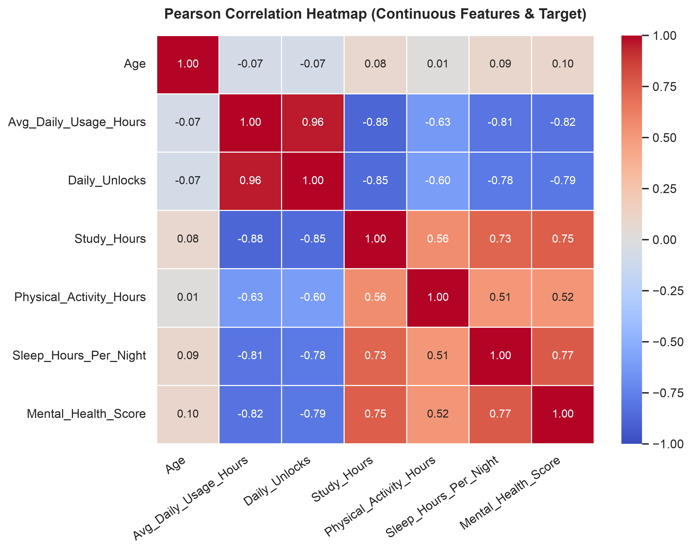
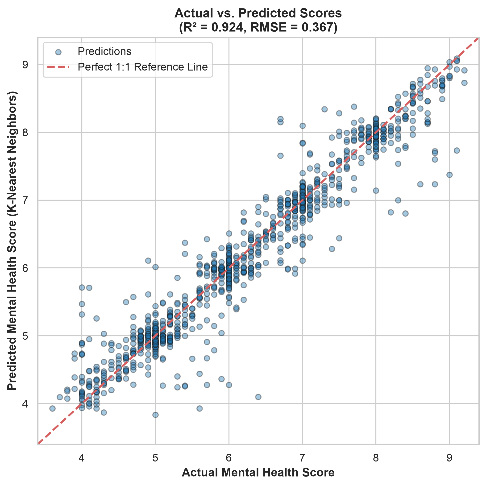

1. Problem Formulation & Research Question
Primary Question:
"Given a student's self-reported social media usage, phone unlocks, platform, purpose of use, and lifestyle habits (study hours, physical activity, and sleep), can we reliably predict their continuous Mental Health Score (1.0–10.0 scale), including for students from countries unseen during training?"
Target & Unit of Analysis
- Unit of Analysis: An individual student survey response.
- Target Variable: Continuous
Mental_Health_Score(1.0 to 10.0 scale, mean = 6.23, std = 1.28). - Prediction-Time Boundary: Only observable lifestyle habits and demographic factors are accessible at inference time.
Limits of the Intended Claim
- Prediction, Not Causation: Reduced sleep and high phone unlocks are correlated with lower mental health scores; they may act as symptoms or co-occurring indicators rather than direct causal drivers.
- Non-Clinical Utility: The model provides educational and self-reflective feedback; it does not replace psychiatric evaluation or clinical triage.
2. Data Understanding & Source Citation
Dataset Source & Academic Citation
The underlying empirical data is the Student Social Media & Mental Health Impact dataset publicly provided on Kaggle:
Citation: Shiva Singh. Student Social Media & Mental Health Impact. Kaggle (2024).
URL: https://www.kaggle.com/datasets/shivasingh4945/student-social-media-and-mental-health-impact
License: Open Database License (ODbL) / Public Domain for Academic Research.
Statement: The student author (Aryan Mangal) acknowledges that this dataset was collected and published by Shiva Singh. All preprocessing, model evaluation, benchmarking, web interfaces, and testing in this repository were independently designed and implemented.
Raw Records collected across 111 nationalities.
Attributes including demographic, digital, and lifestyle habits.
Missing Values across all columns in raw survey data.
Distribution & Correlation Overview
Pearson correlations reveal distinct protective and risk factors associated with student mental wellbeing:

3. Preprocessing & Statistical Reasoning
1. Data Cleaning & Anomaly Handling
- Deduplication: 2 exact duplicate rows were detected and removed, resulting in 4,998 unique student observations.
- Physical Activity Non-Negativity: Physical exercise duration cannot logically be negative. 10 minor negative entries ($-0.1$ to $-0.4$ hours) were clipped to $0.0$ hours with clear domain justification.
2. Strict Target Leakage Prevention
Stress_Levelrepresents an evaluation of concurrent psychological distress—an outcome state closely tied to mental health score.- Including
Stress_Levelin training produces artificial accuracy inflation (target leakage). Therefore,Stress_Levelis strictly excluded from our primary prediction pipeline and evaluated solely in an ablation comparison.
3. Pipeline Architecture
Preprocessing is encapsulated inside a scikit-learn ColumnTransformer and Pipeline, ensuring that all feature scaling (StandardScaler) and one-hot encoding (OneHotEncoder(handle_unknown='ignore')) are fit solely on training folds, entirely preventing test-data leakage.
4. Baseline & Candidate Model Selection
To ensure rigorous academic evaluation, we benchmark candidate models against two distinct baselines:
| Model Family | Specific Model | Role in Study | Assumptions & Objectives |
|---|---|---|---|
| Non-Learning Baseline | Dummy Regressor | Baseline 1 | Always predicts training-set mean ($6.23$); demonstrates what RMSE and $R^2=0$ mean without learning. |
| Interpretable Linear Baseline | Linear Regression (OLS) | Baseline 2 | Provides baseline coefficients; assesses purely linear relationships across standardized features. |
| Regularized Linear | Ridge Regression ($L_2$) | Candidate | Controls multicollinearity between usage hours and unlocks; stabilizes weight magnitudes ($\alpha=0.1$). |
| Regularized Linear | Lasso Regression ($L_1$) | Candidate | Imposes sparsity constraints to test if secondary demographic features should be pruned ($\alpha=0.001$). |
| Instance-Based / Distance | K-Nearest Neighbors (KNN) | Candidate | Predicts via distance-weighted average of closest student profiles ($k=3$, inverse distance weights). |
| Ensemble Bagging | Random Forest Regressor | Candidate | Averages 200 decorrelated decision trees; handles complex feature interactions without linearity assumptions. |
| Ensemble Boosting | Gradient Boosting Regressor | Candidate | Sequentially minimizes residual pseudo-losses using boosted shallow decision trees (200 estimators). |
5. Evaluation Design & Metrics
- Split Strategy: 80% training set ($N=3,998$), 20% held-out test set ($N=1,000$). The test set is locked and evaluated exactly once per final tuned model.
- Tuning Protocol: 5-fold cross-validation on the training set using
GridSearchCVoptimizing Root Mean Squared Error. - Primary Evaluation Metric: RMSE, which penalizes large outlier estimation errors on a continuous wellbeing scale.
- Supporting Metrics: MAE (average absolute magnitude of error) and $R^2$ Score (proportion of target variance explained).
- Statistical Rigor: 95% Bootstrap Confidence Intervals computed across 1,000 resamples of the test set.
- Country Generalization Check: 5-fold
GroupKFoldacross all 111 nationalities to evaluate out-of-distribution performance on students from unseen countries.
6. Model Benchmark Results & Evaluation
Performance on the held-out test set ($N=1,000$ students):
| Model | CV RMSE (5-Fold) | Test RMSE | Test MAE | Test R² Score | 95% Bootstrap CI (RMSE) |
|---|---|---|---|---|---|
| 🥇 K-Nearest Neighbors | 0.3906 | 0.3671 | 0.2360 | 0.9245 | [0.335, 0.402] |
| 🥈 Random Forest Regressor | 0.4035 | 0.3847 | 0.2755 | 0.9171 | [0.360, 0.413] |
| 🥉 Gradient Boosting Regressor | 0.4483 | 0.4527 | 0.3410 | 0.8852 | [0.428, 0.479] |
| Ridge Regression ($\alpha=0.1$) | 0.6030 | 0.6219 | 0.4796 | 0.7833 | [0.593, 0.652] |
| Linear Regression (OLS) | 0.6031 | 0.6221 | 0.4796 | 0.7832 | [0.593, 0.652] |
| Lasso Regression ($\alpha=0.001$) | 0.6113 | 0.6290 | 0.4954 | 0.7784 | [0.600, 0.657] |
| Baseline 1: Dummy (Mean) | 1.2631 | 1.3365 | 1.1276 | -0.0006 | [1.292, 1.379] |


7. Live Interactive Predictor & Routine Advisor
Test the trained model live in your browser. All inputs are evaluated against the Strict 24-Hour Daily Time Budget Law.
8. Interactive Feature Importance Explorer
Toggle between interpretability representations to explore how different algorithms assess feature contributions:
9. Interactive Demographic Error Explorer
Inspect model generalization, bias, and error distributions across demographic segments:
10. Student Understanding & Individual Defense
Student Profile & Contributions
Student: Aryan Mangal | Roll Number: 25110058 | Course: ES 335
Core Technical Contributions:
- Dataset Quality & Leakage Audit: Formulated the research scope; identified and removed exact duplicate observations; clipped non-physical negative activity hours; identified target leakage from
Stress_Leveland designed an ethical leakage-free pipeline. - Benchmarking Architecture: Constructed 5-fold cross-validated pipelines across 7 diverse model configurations, ensuring zero test data leakage during scaling and one-hot encoding.
- Mathematical 24-Hour Enforcement: Designed and implemented real-time mathematical validation ensuring input activities satisfy $0 \le \sum H_i \le 24.0$ in both client-side and backend environments.
- Evidence-Based Routine Engine: Built the personalized suggestion engine using the 25th percentile empirical threshold ($5.10$).
Key Decisions & Evaluation Trade-offs
- Why KNN and Random Forest Outperform Linear Models: Tabular lifestyle data exhibits threshold effects (e.g., sleeping under 6 hours causes non-linear drops in score). Distance-based weighting and tree splits capture these localized clusters far better than global linear planes.
- Why GroupKFold was Crucial: Standard random splits split records from the same country into train and test sets, artificially inflating generalization confidence. GroupKFold revealed that predicting students from unseen countries increases RMSE from $0.367$ to $0.817$, reflecting localized country variance.
- Reasoning about a Small Input Change: Shifting 1.5 hours from social media usage ($5.0 \to 3.5$ hrs) to sleep ($6.5 \to 8.0$ hrs) yields an empirical predicted score increase of approximately $+0.92$ points on the 10-point scale.
11. Reproduction Steps
To reproduce the complete pipeline and run all benchmarks locally:
# 1. Clone repository
git clone https://github.com/aryanmangal/mental-health-score-predictor.git
cd mental-health-score-predictor
# 2. Install dependencies
pip install -r requirements.txt
# 3. Train models and evaluate
python src/train.py
python src/evaluate.py
# 4. Run automated test suite
pytest tests/